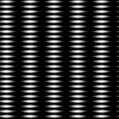
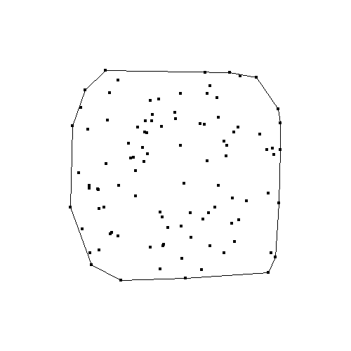
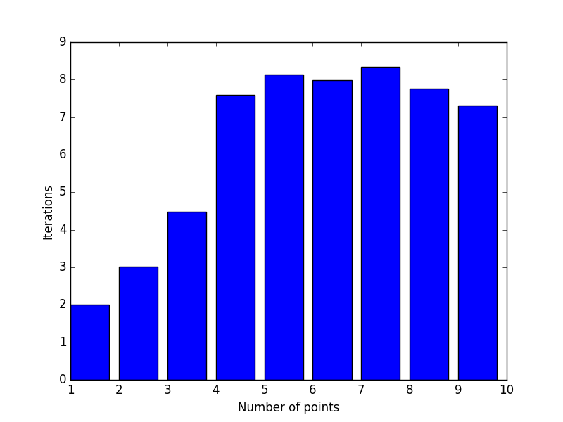
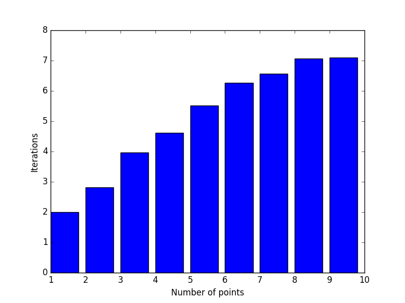

- A) Práca s grafikou, B) Collatzova postupnosť, C) Ulamova špirála, D)NSD prvá časť.
- A) Generovanie kombinácií, variácií a permutácií, B) Pascalov trojuholník, C) Približné umocňovanie
- A) Knžnica pre korytnačiu grafiku, B) Absolútne/Relatívne vykreslovanie, C) Koryrnačia grafika a fraktály, D) Kreativita korytnačky
- A) Obrazce, B) Polygón, C) Efekty, Bonus) Skrývačky
- A) Priesečníky úsečiek, B) Triangulácia, C) Konvexný obal
- A) Chaos game, B) L-systémy, C) Feinbaumov diagram
- B) Mandelbrotova množina, C) Juliove množiny
- A) Transformácie
- A) Monty Hall, B) Analýza postupností, D) Bayesova veta a simulácia
- B) Detekcia zhlukov
- A) Číselné bludisko, B) Robot v bludisku
- Z dôvodu dokončovania Bakalárskej práce som sa nemohol venovať poslednej iterácií úloh. Prosím o ospravedlnenie.
- 1) Vizualizácia NSD
- 2) Výpočet pí
- 3)
- 4)
- 5)
- 6)
- 7) Newtonov fraktál
- 8) MRCM
- 9) Centrálna limitná veta
- 10) Lineárna regresia
- 11)
- 12) Generovanie bludiska
| Link |
|---|


- Prvočísla (pozorujeme, že prvočísla sa zhlukujú na diagonálach)
- Animácia vývoja pre moduly 2-399

Go back to TOC
def combinations(lis, k): result = [] if k == 0: return [[]] else: for i in range(len(lis)): some_result = combinations(lis[i+1:], k-1) for item in some_result: result.append([lis[i]]+item) return result
def combinations_repeat(lis, k): result = [] if k == 0: return [[]] else: for i in range(len(lis)): some_result = combinations(lis[i:], k-1) for item in some_result: result.append([lis[i]]+item) return result
def variations(lis, k): result = [] if k == 0: return [[]] else: for i in range(len(lis)): tmp_list = lis[:] tmp_list.remove(lis[i]) some_result = combinations_repeat(tmp_list, k-1) for item in some_result: result.append([lis[i]]+item) return result
def variations_repeat(lis, k): result = [] if k == 0: return [[]] else: for i in range(len(lis)): some_result = combinations_repeat(lis[:], k-1) for item in some_result: result.append([lis[i]]+item) return result
def slow_rows(n): result = [] for i in range(0,n+1): row = [] for j in range(0,i+1): row.append(len(combinations(range(i),j))) result.append(row) return result
- Veselá anekdota: Pomocou tejto neefektívnej metódy som nechal na pracovnom serveri vypočítať trojuholník do 60 stupnňa. Po dvadsiatich hodinách výpočet stále "prebiehal", až na to, že dokázal skonzumovať 50GB RAM-ky. Vinu z prílišneho zaťaženia som úspešne zvalil na kolegu, o ktorom je známe, že používa Javu...
def quick_rows(n): result = [] prev_row = [] for i in range(1,n): row = [] for j in range(0,i): if j == 0 or j == i-1: row.append(1) else: row.append(prev_row[j]+prev_row[j-1]) prev_row = row[:] result.append(row) return result

|

|
|

|

|

|

|

|

|
Go back to TOC
- Pentagram absolútne
#Rozdelím kružnicu na 5 bodov a pospájam def pentagram_absolutne(size, ratio): im = Image.new('RGB', (size, size), (255,255,255)) draw = ImageDraw.Draw(im) x1, y1 = 250, 250 points = [(int(math.cos(2*math.pi/5*x)*ratio)+x1,int(math.sin(2*math.pi/5*x)*ratio)+y1) for x in xrange(0,5)] points2 = points[:] for point in points: for point2 in points2: draw.line((point[0], point[1], point2[0],point2[1]), fill = 0) points2.pop(0) im.save('pentagram_absolutne.png','png')
#Vypočítam dlhé a krátke rameno a kreslím 5x def pentagram_relativne(size, position, side): inside_angle = 180-(360/5) pentagram_angle = (180 - inside_angle)/2 #rovnoramenny trojuholnik. Sucet uhlov trojuholnika je 180 long_side = int(2*(side*math.cos(math.radians(pentagram_angle)))) g = Korytnacka(size, position) g.right(180+72) for i in range(0,5): g.right(180-pentagram_angle) g.forward(side) g.right(180-pentagram_angle) g.forward(long_side)
#Pre ľubovolnú koštantu z intervalu (side, sqrt(2*(side/2)^2)) sa pomocou acos() dopocita potrebný uhol. Veľkost strany menšieho štvorca je side*constant
def spiral(size, position, side, constant):
g = Korytnacka(size, position)
draw_square(g, side)
angle = math.degrees(math.acos((side - constant*side)/(constant*side)))
for i in range(1, 35):
g.forward(side-side*constant)
side = side * constant
g.right(90-angle)
draw_square(g, side)
g.save('spirala')

#Pomocou pytagorovej vety sa spočíta dĺžka tetivy
def grid(size, ratio, fineness):
im = Image.new('RGB', (size, size), (255,255,255))
draw = ImageDraw.Draw(im)
x1, y1 = 250, 50
x2, y2 = x1-ratio-fineness, y1+ratio+fineness
for i in range(0, 2*ratio/fineness+1):
v = ratio - i*fineness
length = math.sqrt((ratio**2)-v**2)
y1 = y1+fineness
draw.line((x1-length, y1, x1+length, y1), fill = 0)
x2 = x2+fineness
draw.line((x2, y2-length, x2, y2+length), fill = 0)
im.save('grid.png','png')
#určí sa výška trojuholníka a pomocou tangensu sa vypočíta dĺžka strany
def triangles(size, side, fineness):
im = Image.new('RGB', (size, size), (255,255,255))
draw = ImageDraw.Draw(im)
x1, y1, x2, x3, y2 = 250, 250, 250, 250, 250
hside = 0
while 2*hside < side:
y1 -= 2*fineness
y2 += fineness
v = y2 - y1
hside = v/math.atan(60)
x2 = x1 - hside
x3 = x1 + hside
draw.line((x1, y1, x2, y2), fill = 0)
draw.line((x1, y1, x3, y2), fill = 0)
draw.line((x3, y2, x2, y2), fill = 0)
im.save('triangles.png','png')

#podobne ako pri pentagrame, vypočíta sa vnútorný uhol, aby sa mohol vykresliť n-uholník. Aby sa dosiahlo symetrie, ďalší n-uholník sa vykreslí posunutý o vypočítaný uhol
def penrose(size, fineness):
side = (size/10) - fineness
position = (250, 250)
inside_angle = 360/fineness
g = Korytnacka(size, position)
g.right(180+72)
for i in range(0, fineness):
for j in range(0,fineness):
g.right(inside_angle)
g.forward(side)
g.right(inside_angle)
g.save('penrose')

- Pythagorov stromček
- Kochova vločka
- Sierpinského trojuholník
- Päťuholníková vločka


- Postupoval som ako bolo povedané na cviku: Vybral som si nejaké ťahy, ktoré som nechal opakovať 1000 krát a upravoval som parametre tak aby sa mi výsledok páčil
- Sínusová hviezdica
def star(): angle = 10 angle2 = 170 kvocient = 50 kvocient2 = 2 forward = math.sin(math.radians(angle))*kvocient for i in range(0,1000): g.left(angle) g.forward(forward) g.right(angle2+i*10) g.back(forward*kvocient2) g.right(angle2+i*10) g.forward(forward)
 <
<

- Sínusová hviezdica
a = randint(0,10) forward = math.log10(a) angle = randint(0,90) for i in range(0,1000): g.left(angle) g.forward(math.log10(forward**i))
 < <
|
a = randint(0,100) forward = 100 angle = randint(0,180) print a, angle for i in range(0,100000): g.left(angle*math.pi*i) g.forward(math.atan(forward+i))
| < |
- A) Obrazce


- B) Polygón. Pre každý riadok sa vypočítajú priesečníky s úsečkami. Ak (x,y) je priesečník, zmení sa farba vykreslovania
- C) Efekty



- BONUS) Skrývačky:
-


Go back to TOC

- 
Go back to TOC
- 3 body, 1/2
- 6 bodov, 1/2
- 6 bodov, 1/3
- 5 bodov, 1/2
- 5 bodov, 1/3


- Kochova vločka, Sierpinského trojuholník, Pythagorov stromček

- Stromy, riasy, prasličky
 <
<

- Rôzne krivky


- C) Feigenbaumov diagram


Go back to TOC
Go back to TOC
from random import choice
def play_game(strategy):
_list = [0,1,2]
treasure_door = choice(_list) #there is a treasure behind one door
chosen_door = choice(_list) #player chooses one door
_list.remove(treasure_door)
if treasure_door != chosen_door: _list.remove(chosen_door)
remaining_door = _list[0] #game master opens unchosen door without treasure
_list = [0,1,2]
_list.remove(remaining_door)
if strategy == 'stay':
if chosen_door == treasure_door: return 1
else: return 0
if strategy == 'change':
if chosen_door != treasure_door: return 1
else: return 0
_list = []
for i in range(0,10000):
_list.append(play_game('stay'))
print _list.count(1)
_list = []
for i in range(0,10000):
_list.append(play_game('change'))
print _list.count(1)
- Postupnosť 1, diagonala s nizkymi cislami na diagramoch. znamena, ze je mala pravdepodobnost, ze budu nasledovat dve rovnake cisla za sebou
(array([ 23, 152, 156, 167, 166, 169]), array([1, 2, 3, 4, 5, 6, 7])) (array([149, 21, 173, 185, 145, 160]), array([1, 2, 3, 4, 5, 6, 7])) (array([164, 164, 17, 136, 171, 181]), array([1, 2, 3, 4, 5, 6, 7])) (array([178, 157, 156, 15, 175, 152]), array([1, 2, 3, 4, 5, 6, 7])) (array([160, 175, 173, 165, 17, 143]), array([1, 2, 3, 4, 5, 6, 7])) (array([159, 165, 158, 164, 159, 28]), array([1, 2, 3, 4, 5, 6, 7]))
- Postupnosť 2, histogram pre jednotlivé čísla (1-6): [ 855, 428, 829, 845, 1244, 798]. Počet dvojok je príliš nízky. Počet pätiek je príliš vysoký.
- Postupnosť 4, po nepárnom čísle ide vždy párne a naopak
(array([ 0, 291, 0, 271, 0, 290]), array([1, 2, 3, 4, 5, 6, 7])) (array([276, 0, 264, 0, 286, 0]), array([1, 2, 3, 4, 5, 6, 7])) (array([ 0, 265, 0, 301, 0, 262]), array([1, 2, 3, 4, 5, 6, 7])) (array([279, 0, 290, 0, 281, 0]), array([1, 2, 3, 4, 5, 6, 7])) (array([ 0, 271, 0, 277, 0, 271]), array([1, 2, 3, 4, 5, 6, 7])) (array([297, 0, 274, 0, 252, 0]), array([1, 2, 3, 4, 5, 6, 7]))
- Postupnosť 5, Po každom čísle ide s velkou pravdepodobnosťou jedno číslo a s menšou, ale velkou pravdepodobnosťou druhé číslo.
- 1: 6 a 5
- 2: 5 a ...
- 3: 4 a 5
- 4: 1 a 5
- 1: 3 a 5
- 1: 2 a 5
(array([ 35, 41, 36, 40, 102, 553]), array([1, 2, 3, 4, 5, 6, 7])) (array([108, 102, 93, 118, 299, 116]), array([1, 2, 3, 4, 5, 6, 7])) (array([ 28, 43, 36, 551, 102, 52]), array([1, 2, 3, 4, 5, 6, 7])) (array([560, 49, 45, 43, 106, 40]), array([1, 2, 3, 4, 5, 6, 7])) (array([ 43, 44, 551, 49, 115, 39]), array([1, 2, 3, 4, 5, 6, 7])) (array([ 33, 557, 51, 41, 118, 59]), array([1, 2, 3, 4, 5, 6, 7]))
- Implementáia Bayesovej vety pre daný problem
#PN: Pravdepodobnost, ze kocka bude falosna #PP: Pravdepodobnost, ze kocka bude prava #PVN: Pravdepodobnost k sestiek za predpokladu, ze kocka je falosna #PVP: Pravdepodobnost k sestiek za predpokladu, ze kocka je prava def bayes_calc(n,k): PN = 1.0/n PP = 1.0-PN PVP = 1.0/6**k PVN = 1.0 return (PVP*PP)/(PVP*PP+PVN*PN)
- Impelemtácia simulácie problmému
#Jedna iteracia pokusu def bayes_iteration(n,k): box = [True for x in range(1,n)]+[False] random.shuffle(box) dice = random.choice(box) if dice: stat = [random.randint(1,6) for x in range(k)] if not dice: stat = [6 for x in range(k)] if stat == [6 for x in range(k)]: return True, dice else: return False, dice #Obal pre mnoho pokusov def bayes(n, k, statistics = 10000): nice, rigged = 0, 0, 0 for i in range(statistics): #dalo by sa spravit presnejsie, ale zato s vyssim casom success, dice = bayes(n,k) if success and dice: nice += 1 if success and not dice: rigged += 1 return nice/float(nice+rigged)
- Pokus n 10, k 5.
- Odhad: Pravdepodobnosť výberu falošnej kocky je celkom vysoká a pravdepodobnosť 5x6 za sebou celkom nízka, to znamená, že číslo bude pravdepodobne nízke, do 0.1.
- Výsledok simulácie: 0.00422832980973
- Výsledok výpočtu: 0.00115606936416
- Pokus n 100, k 3.
- Odhad: Pravdepodobnosť výberu falošnej kocky bude 1/100 a pravdepodobnosť hodu 3x6 za sebou je stále menšia. Odhadujem výsledok +-0.3.
- Výsledok simulácie: 0.308641975309
- Výsledok výpočtu: 0.314285714286
- Pokus n 1000, k 5.
- Odhad: Pravdepodobnosť výberu falošnej kocky je 1/1000 a pravdepodobnosť 5x6 za sebou je síce celkom nízka, ale už o mnoho bližšie pravdepodobnosti výberu falošnej kocky. Predpokladám tak do 0.05
- Výsledok simulácie: 0.214285714286
- Výsledok výpočtu: 0.113846153846
-
def distance((x1,y1),(x2,y2)): return math.sqrt((x2-x1)**2+(y2-y1)**2) def assign((x,y), centers): assigned = {} for center in centers: assigned[center] = [] for i in range(len(x)): distances = [] for (xc, yc, color) in centers: distances.append(distance((x[i],y[i]),(xc,yc))) assigned[centers[distances.index(min(distances))]].append((x[i],y[i])) return assigned def update_centers(assigned): updated_centers = [] for (xc, yc, i), p_list in assigned.items(): if p_list: x = int(np.mean(map(lambda x: x[0],p_list))) y = int(np.mean(map(lambda x: x[1],p_list))) updated_centers.append((x, y, i)) else:updated_centers.append((xc, yc, i)) updated_centers.sort() return updated_centers def clusters((x,y), original, k, noise, size=100,): centers = [(random.randint(0,size), random.randint(0,size), i) for i in range(k)] # centers = [(size/2+random.randint(0,20), size/2+random.randint(0,20)) for i in range(k)] print centers centers_old = None i = 0 while centers_old != centers: centers_old = centers assigned = assign((x,y), centers) show_clusters(assigned, i, original, size, noise) centers = update_centers(assigned) i += 1 return i #number of iterations - Pribeh hladania zhlukov. Krížiky predstavujú pôvodné body, trojuholníky predpokladané centrá. V prvej rade sú pôvodné body generované ne kružnici, v druhej náhodne.


- Počet krokov pre dosiahnutie konvergencí pre 1 až 9 bodov vytvorených na kružnici (prva rada) alebo nahodne (druha rada). Stlpce predstavuju mieru sumu, z lava do prava 10, 20 a 30.
 
- Riešička vie pre každé políčko bludiska zistiť možné ťahy. Takýmto spôsobom sa vygeneruje graf. Vrcholy sú políčka. Hrana je medzi vrcholmi ak existuje z jedného do druhého políčka možný ťah. Nad týmto grafom sa spúšta Djikstra stiahnutý z internetu. Počet najkratších ciest sa vykonáva odmazávaním najkratších ciest a opätovným riešením.
class numMaze: def __init__(self,matrix): self.size = len(matrix) self.x = 0 self.y = 0 self.matrix = matrix self.graph = self.make_graph() def go_to(self, position): self.x = position[0] self.y = position[1] def possible_moves(self,x,y): number = self.matrix[x][y] positions = [(x+number,y),(x-number,y),(x,y+number),(x,y-number)] positions = filter(lambda x: x[0]>-1 and x[0] (v) self.size and x[1] (v)-1 and x[1] (v) self.size, positions) return positions def make_graph(self): graph = {} for i in range(0,self.size): for j in range(0,self.size): node = (i,j) moves = self.possible_moves(i,j) newDict = {} for move in moves: newDict.update({move:1}) graph[node] = newDict return graph def solve(self): return shortestPath(self.graph,(0,0),(self.size-1,self.size-1)) def is_unique(self): P = self.solve() length = len(P) print P for i in range(0,length-1): del self.graph[P[i]][P[i+1]] try: P = shortestPath(self.graph,(0,0),(self.size-1,self.size-1)) except KeyError: print 'This solution is the only path' return 1 if length == len(P): print 'This solution is not the only shortest path' return 0 print 'This solution is the only shortest path' return 1
- Riešička vytvára graf. Vrcholy sú trojice X, Y, rotácia. Pomocou počítania možných ťahov sa generujú hrany. Na riešenie je opäť použitý Djikstra z internetu.
class robotMaze: def __init__(self,matrix): self.sizeY = len(matrix) self.sizeX = len(matrix[0]) self.matrix = matrix self.graph = self.make_graph() def possible_moves(self,node): if node[2] == 'west': moves = [(node[0],node[1],'north'),(node[0],node[1],'south')] if node[1]-1 > -1 and self.matrix[node[0]][node[1]-1] == '.': moves.append((node[0],node[1]-1,'west')) return moves else: return moves if node[2] == 'east': moves = [(node[0],node[1],'north'),(node[0],node[1],'south')] if node[1]+1 (v) self.sizeX and self.matrix[node[0]][node[1]+1] == '.': moves.append((node[0],node[1]+1,'east')) return moves else: return moves if node[2] == 'north': moves = [(node[0],node[1],'east'),(node[0],node[1],'west')] if node[0]-1 > -1 and self.matrix[node[0]-1][node[1]] == '.': moves.append((node[0]-1,node[1],'north')) return moves else: return moves if node[2] == 'south': moves = [(node[0],node[1],'east'),(node[0],node[1],'west')] if node[0]+1 (v) self.sizeY and self.matrix[node[0]+1][node[1]] == '.': moves.append((node[0]+1,node[1],'south')) return moves else: return moves def make_graph(self): graph = {} for i in range(0,self.sizeY): for j in range(0,self.sizeX): if self.matrix[i][j] != '#': moves = self.possible_moves((i,j,'west')) newDict = {} for move in moves: newDict.update({move:1}) graph[(i,j,'west')] = newDict moves = self.possible_moves((i,j,'east')) newDict = {} for move in moves: newDict.update({move:1}) graph[(i,j,'east')] = newDict moves = self.possible_moves((i,j,'north')) newDict = {} for move in moves: newDict.update({move:1}) graph[(i,j,'north')] = newDict moves = self.possible_moves((i,j,'south')) newDict = {} for move in moves: newDict.update({move:1}) graph[(i,j,'south')] = newDict return graph def solve(self,end): return shortestPath2(self.graph,(0,0,'east'),end)